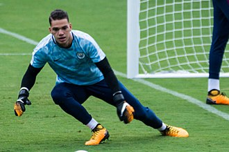
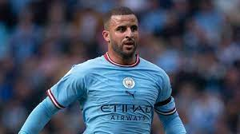
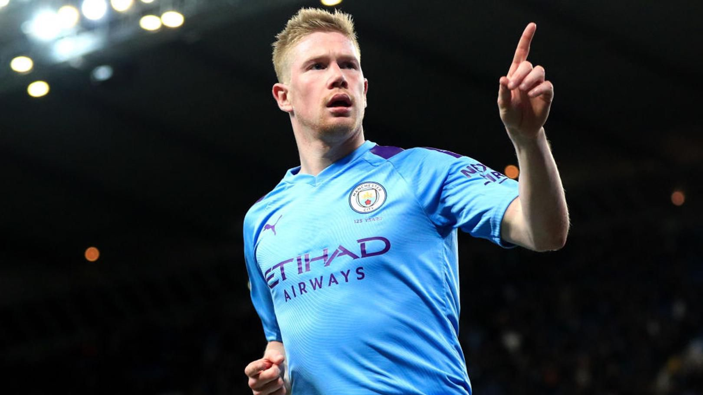
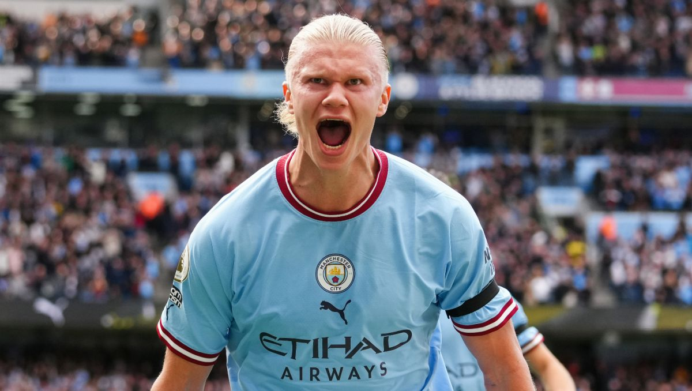

Moje hobby
Od małego interesuję się sportem. Jestem wielkim fanem sportów drużynowych takich jak siatkówka, piłka nożna, czy koszykówka. W wieku 9 lat dołączyłem do drużyny "Bałtyk Gdynia", gdzie przetrenowałem 8 lat, w tym 2 jako kapitan.
Poza aktywnym spedzaniem wolnego czasu, lubię także kibicować moim ulubionym druzynom za telewizora. Jedną z nich jest właśnie Manchester City-topowy klub w angielskiej lidze piłkarskiej, więc postanowiłem zrobić o nim projekt.
A tutaj są zdjęcia najlepszych piłkarzy z Manchesteru City



